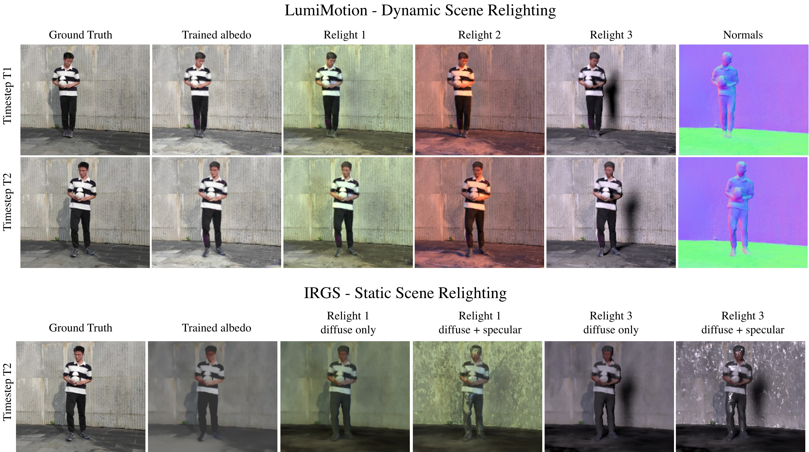
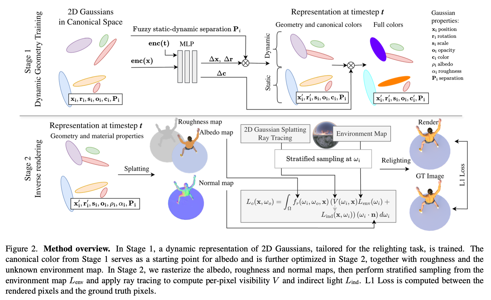
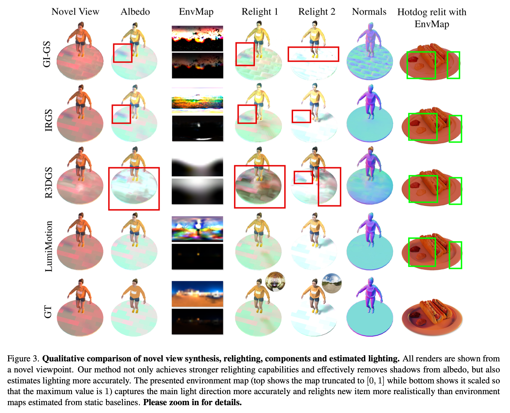
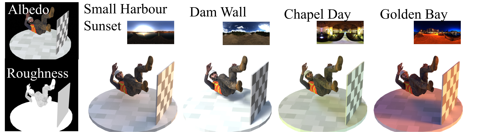

LumiMotion: Improving Gaussian Relighting
with Scene Dynamics
Accepted to CVPR 2026
* equal contribution

Abstract
In 3D reconstruction, the problem of inverse rendering, namely recovering the illumination of the scene and the material properties, is fundamental. Existing Gaussian Splatting-based methods primarily target static scenes and often assume simplified or moderate lighting to avoid entangling shadows with surface appearance. This limits their ability to accurately separate lighting effects from material properties, particularly in real-world conditions. We address this limitation by leveraging dynamic elements, regions of the scene that undergo motion, as a supervisory signal for inverse rendering. Motion reveals the same surfaces under varying lighting conditions, providing stronger cues for disentangling material and illumination. This thesis is supported by our experimental results which show we improve LPIPS by 23% for albedo estimation and by 15% for scene relighting relative to next-best baseline. To this end, we introduce LumiMotion, the first Gaussian-based approach that leverages dynamics for inverse rendering and operates in arbitrary dynamic scenes. Our method learns a dynamic 2D Gaussian Splatting representation that employs a set of novel constraints which encourage the dynamic regions of the scene to deform, while keeping static regions stable. As we demonstrate, this separation is crucial for correct optimization of the albedo. Finally, we release a new synthetic benchmark comprising five scenes under four lighting conditions, each in both static and dynamic variants, for the first time enabling systematic evaluation of inverse rendering methods in dynamic environments and challenging lighting.
Method

Results on real scenes from ENeRF dataset
Results on real scenes from DNA dataset
Click on the videos to zoom them.
Results on our synthetic scenes

GT Renders of our proposed synthetic dataset - variety of light conditions

Acknowledgments
We acknowledge the following useful resources and repositories we built upon while developing LumiMotion:
Citation
If you find this work useful, please cite:
@inproceedings{kaleta2026lumimotion,
title = {LumiMotion: Improving Gaussian Relighting with Scene Dynamics},
author = {Kaleta, Joanna and Wojcik, Piotr and Marzol, Kacper and Trzcinski, Tomasz and Kania, Kacper and Kowalski, Marek},
booktitle = {Proceedings of the IEEE/CVF Conference on Computer Vision and Pattern Recognition (CVPR)},
year = {2026}
}Please consider citing acknowledged works as we build upon their repositories.